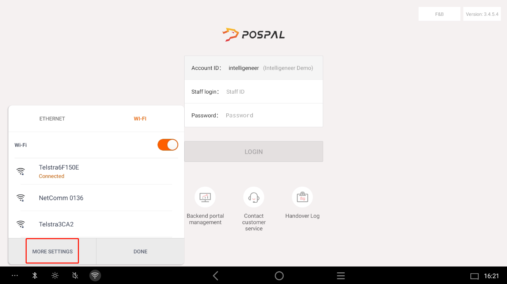
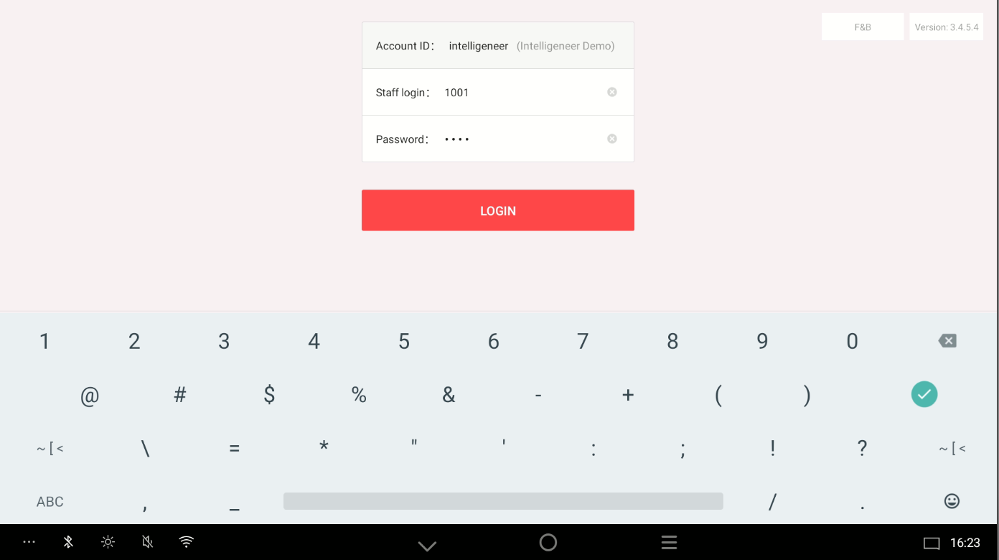
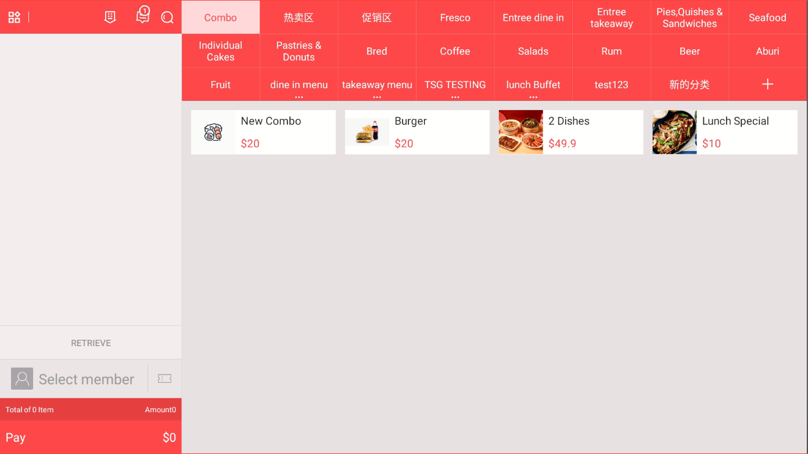
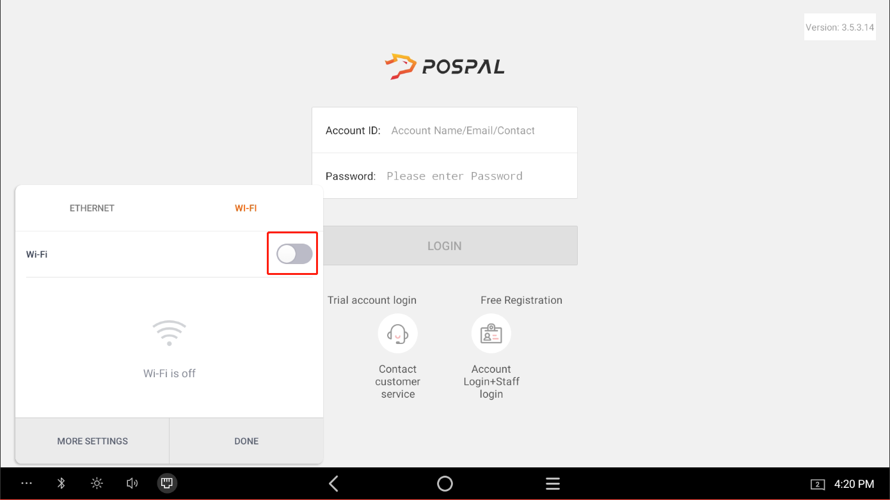
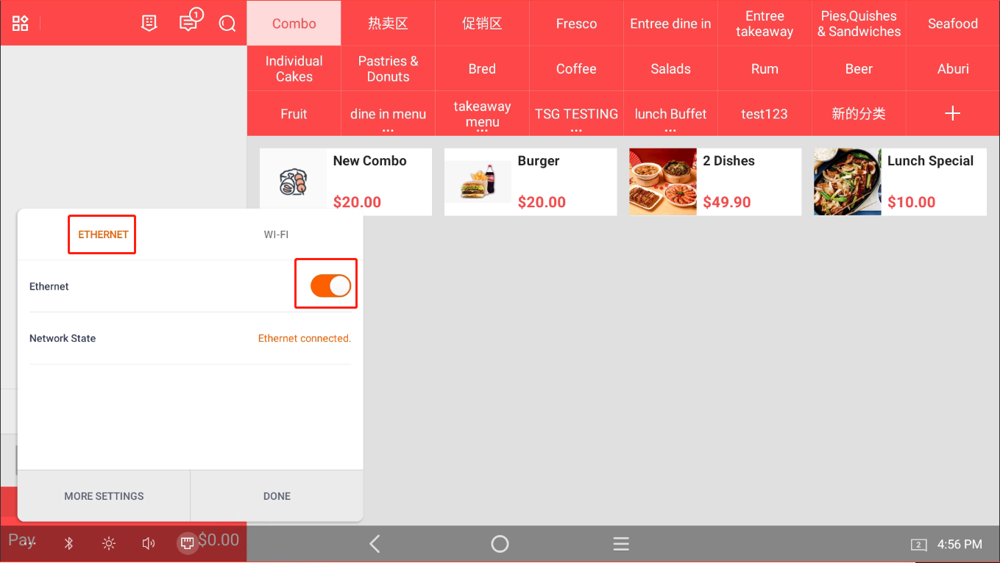

使用移动热点登录PosPal系统（无互联网访问）
2024年11月13日 · Charlie
本章将讲解如何使用移动热点，在没有互联网连接的情况下登录PosPal系统。
- 首先找到左下角的第五个按钮
- 关闭“以太网”按钮
切换到WiFi选项

开启WiFi按钮

开启WiFi后，点击“更多设置”
确保您的移动热点已开启，并开启“最大兼容性”
选择您的移动热点并输入密码

然后返回登录页面，用您的员工账号登录
登录后，您将看到订单页面
在订单页面，返回左下角的第五个按钮，进入WiFi选项，关闭WiFi按钮
然后切换到以太网选项，开启以太网
这样，订单系统可以离线使用，厨房打印机和KDS仍能正常工作。